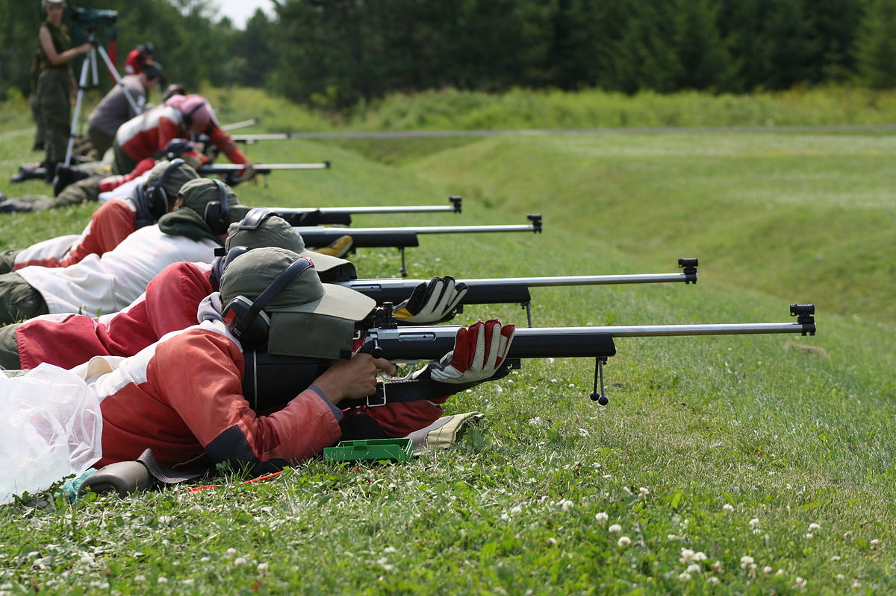

Uzun Menzil
Uzun menzilli atış , atmosferik koşulları değerlendirmeye dayalı görüş ayarının kritik hale geldiği mesafelerde yapılan atışlardır.
Uzun menzilli atış , hedefe olan mesafenin, atıcının çeşitli balistik faktörleri , özellikle de yerçekimi ve rüzgarın sapan etkileri ile ilgili olarak hesaplamak için çaba harcamasını gerektirecek kadar önemli olduğu atış disiplinleri için ortak bir terimdir . Daha kısa mesafelerde atış yaparken, bir atıcı en fazla sınırlı mermi düşüşünü telafi etmek için manzaraları yalnızca hafifçe ayarlamalıdır ,
ancak menzil genişletildiğinde, ciddiye alınması gerektiği ölçüde, rüzgarın sürüklenmesi hassasiyeti etkileyen ilk faktör olacaktır. hesap. Bazıları uzun menzilli atışların, rüzgar, mesafe ve çeşitli atmosferik koşulların değerlendirilmesinin, saf atış becerileri kadar sonuçlar için eşit derecede önemli olduğu yerlerde başladığını savunur - yani, kişi teknik olarak mükemmel bir atış yapsa bile, atıcı yanlış hesaplamalar
nedeniyle hedefi ıskalayacaktır. bazı unsurların dikkate alınmaması veya yalnızca öngörülemeyen menzil dışı koşullar nedeniyle. Disiplinlerarası çevrelerde, tam güçlü fişekleri ateşleyen standart bir tüfek için (örn . .308 Winchester ) "uzun menzil"in, hedefin 600 m'den (660 yarda) daha uzakta olduğu anlamına geldiği yaygın olarak kabul edilmektedir, "aşırı uzun menzil" ise genellikle hedef mesafesinin
atıcıdan 1.000 m'den (1.100 yarda) daha uzakta olduğu kabul edilir.
Tipik olarak uzun mesafedeki hedeflerden oluşan birkaç rekabetçi maç devresi vardır. Benchrest atış etkinlikleri genellikle 100 ila 900 metre (≈ 100 ila ≈ 1000 yarda) arasındadır, F-Serisi tipik olarak 300 ila 900 metre (≈ 300 ila ≈ 1000 yarda) ile aynıdır. Disiplinler arası atışın büyüyen bir biçimi olan ve Pratik Hassasiyet olarak bilinmeye başlandığında,
hedefleri 100 ila 1800 metre arasında hemen hemen her mesafeye yerleştirir ve puanlama, çeşitli boyutlarda ve çeşitli konumlardan (ayakta, diz çökmüş, yüzüstü ) çelik hedeflere isabet/ıskalama şeklinde yapılır. Bu maç türü hızla F-Serisi'nden daha popüler hale geliyor. Uzun mesafe atış sanatını öğretmek için çok az eksiksiz kaynak vardır, ancak birincil hedefi eğitim olan bazı özel kaynaklar ve kuruluşlar vardır.

- Fullbore hedefe atış , 300–1200 yarda menzillerdeki hedeflere atış yapmakla ilgilidir. Spor uluslararası olarak ICFRA tarafından yönetilir ve Birleşik Krallık, ABD, Almanya ve İngiliz Milletler Topluluğu ülkelerinde popülerdir. Daha kısa mesafelerde ateş edilse de, hedef tahtası ve sahada atış olarak adlandırılan benzer disiplinler İskandinavya'da popülerdir.
- Palmiye1876'dan kalma, 1.000 yardaya kadar uzun menzilli tüfek atışlarını içeren bir ICFRA tam çaplı yarışma formatıdır. İlk Palma maçına ABD, Avustralya, Kanada, İskoçya ve İrlanda'dan takımlar katıldı (o sırada ağızdan dolu tüfeklerle). Maçlar 1920'lerin sonlarına kadar devam etti ve kupa sonunda 2. Dünya Savaşı'nın patlak vermesi sırasında Washington DC'de kaybedildi. Maç 1966'da Kanada'da modern çağda yeniden canlandırıldı ve dünyanın dört bir yanından takımlar arasında devam ediyor. PALMA cıvata mekanizmalı tüfekler, 7,62 mm NATO kalibreli (Winchester .308) ve mikrometre açıklığı (demir) nişangahları kullanan 155 tane mermi kullanan Match Grade mühimmatı veya maksimum kurşun ağırlığı 5,56 mm olan bir 5,56 mm NATO (.223 Remington)'dır. 90 tane ve demir manzaraları. Son mermi teknolojisi sayesinde, .223 mermiden çıkan 85,5 tane mermi, .308'i geçebilir,Son iki Uluslararası Uzun Menzilli Hedef Tüfek Maçı 2011'de Avustralya'da ve 2015'te ABD'de yapıldı ve Büyük Britanya kazandı.
- F-Serisi , 1000 yardaya kadar olan mesafelerde Fullbore Target Rifles ile çekilen bir başka ICFRA fullbore yarışma formatıdır, tüfekler teleskopik nişangahlarla donatılmıştır ve el kundağı ve dipçik kullanımına izin verilmektedir. Bu, Fullbore Target Rifle'ın hızla büyüyen bir çeşididir. 'F', F-Serisi'nin Kanadalı mucidi George Farquharson'ı onurlandırıyor.
- Hassas Tüfek Müsabakaları , hız ve hassasiyet arasında bir denge bulmaya çalışan, genellikle hem bilinen hem de bilinmeyen mesafelerde alışılmadık konumlardan bir zaman sınırı ile hareket ve atış yapmayı içeren, nispeten yeni bir uzun menzilli yarışma formatıdır.
- Ulusal Tüfek Ligi (NRL), Amerika Birleşik Devletleri'nde hassas tüfek atışlarının geliştirilmesine ve eğitimine adanmış, 501(c)(3) kar amacı gütmeyen bir kuruluştur . Maç formatları, .224 ila .308 arasındaki herhangi bir kalibreye izin verir ve saniyede 3.200 fiti (980 m/s) aşmaz; en az iki gün. 2017'deki ilk çıkışından bu yana, şu anda ligde sekiz eyaletten 11 kulüp yer alıyor.
- National Rifle League 22 ( NRL22 ), National Rifle League altında .22 Long Rifle kenar ateşli tüfeklere ayrılmış bir alt ligdir . Çoğu bölgenin 1000 yarda menzile erişimi olmadığı, ancak neredeyse tüm bölgelerin 100 yarda menzile sahip olduğu ve çoğu atıcının 22'lik tüfeklere sahip olduğu gerçeğini ele almak için kurulmuştur. Şampiyonluk maçları, en az 15 ayrı aşamada ateşlenen en az 170 mermiden oluşur. Şu anda ABD'deki 31 eyaletten 68 kulüp, İngiltere ve Avustralya'dan iki denizaşırı kulübün yanı sıra NRL22 maçlarına katılıyor.
- T Sınıfı Atıcılık Sporu Müsabakaları. Hassas tüfek sistemleri ile pratik keskin nişancılık, kısa sürede dünya çapında büyük popülerlik kazanan bir atış sporudur. Yapay olarak yaratılmış, ancak gerçekçi stresli koşullar altında, farklı konumlardan, çeşitli mesafelerdeki (bilinen ve bilinmeyen) statik veya dinamik hedeflere ateş etmeye odaklanır. Zorluk seviyesi nedeniyle hem uygulama hem de gözlem için son derece ilginç olduğunu kanıtlıyor. Uluslararası T-Sınıfı Konfederasyonu (ITCC), 2014 yılında T-Sınıfı atıcılık sporunu uluslararası alanda tanıtmak amacıyla kurulmuş, genel merkezi Bulgaristan'da bulunan, kar amacı gütmeyen bir kuruluştur. T-Sınıfı Müsabakalarını tasarlamak ve yönetmek için bir dizi Kural sunar.